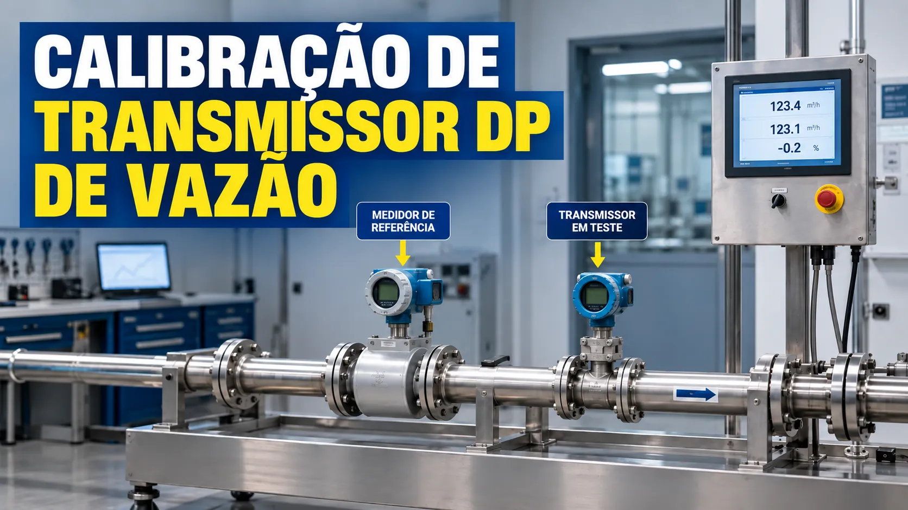

Calibração de Transmissor DP de Vazão
Conteúdo técnico: ALOGY Engenharia · Atualizado em: 11/09/2026

Na medição de vazão por elemento primário, a pressão diferencial cresce aproximadamente com o quadrado da vazão nas condições do projeto. Essa relação muda a escolha dos pontos de calibração: 50% de vazão não corresponde a 50% de DP, mas a 25% de DP.
Relação entre vazão e pressão diferencial
DP% = (Q%)²
A relação normalizada pressupõe que o elemento primário, o fluido e as condições de processo usados no cálculo continuem aplicáveis. Ela é útil para definir pontos de bancada e entender a função de transferência da malha.
| Flow | DP correspondente | Saída linear em vazão |
|---|---|---|
| 0% | 0% | 4 mA |
| 25% | 6,25% | 8 mA |
| 50% | 25% | 12 mA |
| 75% | 56,25% | 16 mA |
| 100% | 100% | 20 mA |
Onde a square root está configurada?
Antes do teste, confirme se a extração de raiz está no transmissor ou no PLC/DCS. Quando está no transmissor, a saída 4–20 mA pode ser linear em vazão e os pontos de DP devem seguir a relação quadrática. Quando o transmissor envia DP linear e o sistema faz a raiz, a corrente acompanha o DP, não a vazão.
Aplicar square root nos dois lugares distorce a indicação. Desativá-la nos dois também produz uma leitura incompatível com a estratégia prevista. Confira a configuração ponta a ponta.
As-found e as-left
Registre primeiro a condição as-found, incluindo DP aplicado, mA medido e configuração da função de transferência. Depois de qualquer ajuste autorizado, repita os pontos e documente o as-left.
Exemplo com DP máximo de 400 mbar
Para simular 50% de vazão, aplique 25% do DP máximo: 100 mbar. Com square root no transmissor e saída linear em flow, a corrente esperada é 12 mA.
Se o padrão realmente aplicar 101 mbar e o transmissor fornecer 12,08 mA, registre separadamente o desvio de aplicação do padrão e o erro da saída. Misturar os dois pode atribuir ao transmissor um erro que nasceu na pressão aplicada.
Sequência prática de conferência
- Confirme TAG, LRV, URV, unidade e localização da square root.
- Equalize e zere o conjunto conforme o procedimento.
- Aplique os pontos de DP correspondentes ao flow desejado, registrando o valor realmente aplicado.
- Compare corrente medida e esperada; repita em descida quando aplicável.
- Antes de ajustar, verifique linhas de impulso, manifold, vazamentos, condensado, bolhas e entupimento.
Limitações importantes
Uma calibração de bancada verifica o transmissor, mas não comprova sozinha a exatidão do flowmeter instalado. Geometria do elemento primário, diâmetro interno, densidade, temperatura, pressão estática, perfil de escoamento e linhas de impulso também afetam o resultado da malha.
Ferramentas relacionadas
Referências para aprofundamento
Aviso técnico
Este material é informativo. Não substitui levantamento de campo, cálculo do elemento primário, compensação de processo, procedimento de calibração, análise de risco ou documentação do fabricante. Não intervenha em linhas pressurizadas sem liberação e condição segura.